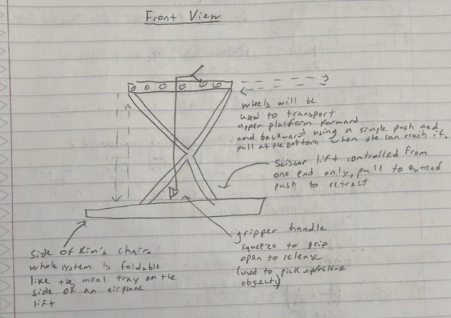
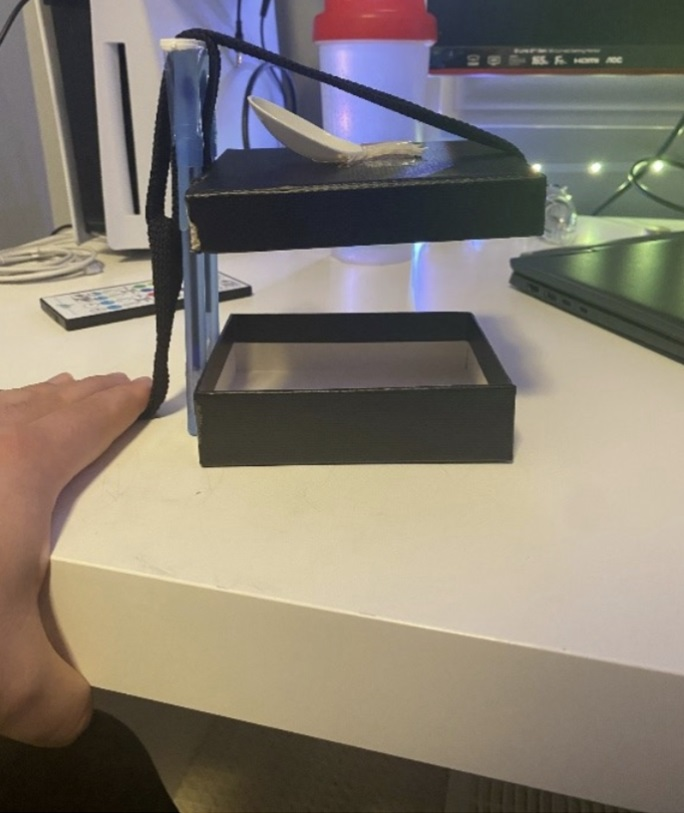
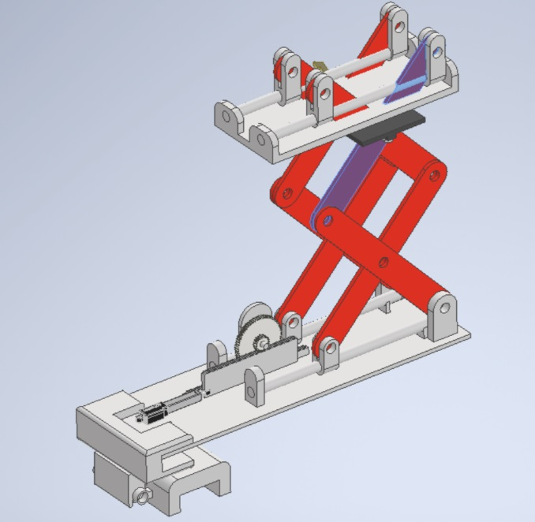
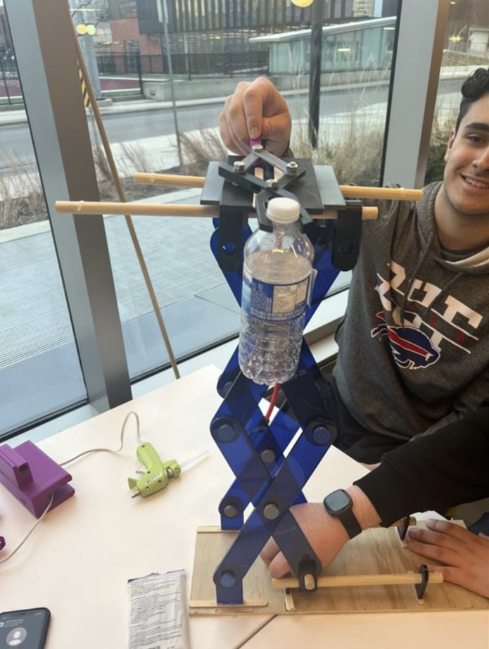

Power In Community
Project Overview
Introduction:
- Title: Power In Community
- Duration: February 2023 - April 2023
- Role: Project Administrator
- Technologies Used: Autodesk Inventor (CAD software)
Summary:
The idea for this project was to design and build a solution to help a couple that suffer from a variety of challenges. One of them suffered from impaired vision as a result of Diabetes, and the other suffered from Multiple Sclerosis, which causes weak motor skills and limb function, as well as inability to walk. We were given the freedom to decide who were were going to build a design for, and what we were going to build. Our 4-person team decided to build a claw mounted on a scissor lift that is extendable and retractable for the person with Multiple Sclerosis, for her to be able to reach objects that are out of her physical reach.
Initial Problem Statement:
“Design a solution to help the person with Multiple Sclerosis complete daily functions around the house. Kim was diagnosed with Multiple Sclerosis, which heavily impacts her capabilities to perform day-to-day activities. The design should be lightweight and durable, so Kim is able to use it efficiently without impeding her everyday life.”
Objectives:
- Lightweight
- Durable
- Extendable/Contractable
- Efficient
Materials and Tools:
- 3D filaments for claw, top plate, hinge and pins
- Acrylic for scissor lift links
- Wood for baseplate
- Wooden dowels at the top and bottom of scissor lift
- Nylon bungee rope to secure the mechanism
Project Reflection
This project was one of the most impactful and life-changing projects I have ever been a part of. The idea of using my skills as an aspiring engineer, to help improve another person’s life was eye-opening and heart-warming. It was also one of the most challenging projects I have ever been a part of because of the fast-pace and pressurized nature of the project. It was crucial to stay on top of our work and make sure we were progressing week-by-week, because if we fell off track even just a little bit, it would have been very hard to catch up because of all the materials we needed to secure, and the differing schedules of all of the team members involved. It made me aware of several team dynamics like delegation and leadership, and helped me develop those skills thoroughly to be able to be ready for a similar project in the future. Without a good leader and persistent team members, it is very difficult to achieve success, especially for a complex and fast-moving project like this one. Next time, I would make sure that we organize ourselves, and all the materials needed, well in advance of when we actually need them. One of the challenges of this project was gathering all of the materials and ordering the parts needed to build the system successfully. Since there is aways a delay in when we need the parts and when we can actually receive them, it is important to consider these parts and materials before we actually need them, so that we are prepared with everything we need when it comes time to build the system.
Gallery/Visuals
Initial Concept:
Initial Prototype:
Initial CAD:
Final Design:
